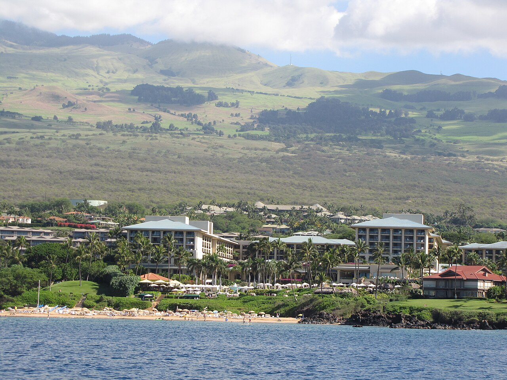

1Wailea

图：Forest and Kim Starr · Wikimedia Commons · CC BY 3.0 us
Four Seasons Resort Maui at Wailea
适合谁想要「整体最稳」的成年人：服务、客房、海滩、餐饮都不想妥协。
强项服务节奏细、客房舒展、海滩与泳池配套完整；官方列出 Spago、Ferraro's、DUO、KOMO 等多家餐厅，一处能吃到多种风格。
取舍经典国际奢华气质，「夏威夷在地感」不如小体量精品；热门时段泳池边人不少。
来源与核实
- 官方链接：https://www.fourseasons.com/maui/
- 核实状态（2026-09-28）：官方链接已确认存在；站点拦截自动抓取，正文未能机读。Four Seasons 官网（搜索结果标题「Maui Luxury 5 Star Beach Resort」；站点拦截自动抓取）
- 照片：图：Forest and Kim Starr · Wikimedia Commons · CC BY 3.0 us
- 排名依据：我的主观成人度假综合判断，不按价格、不按积分，也不把临时停电当质量。